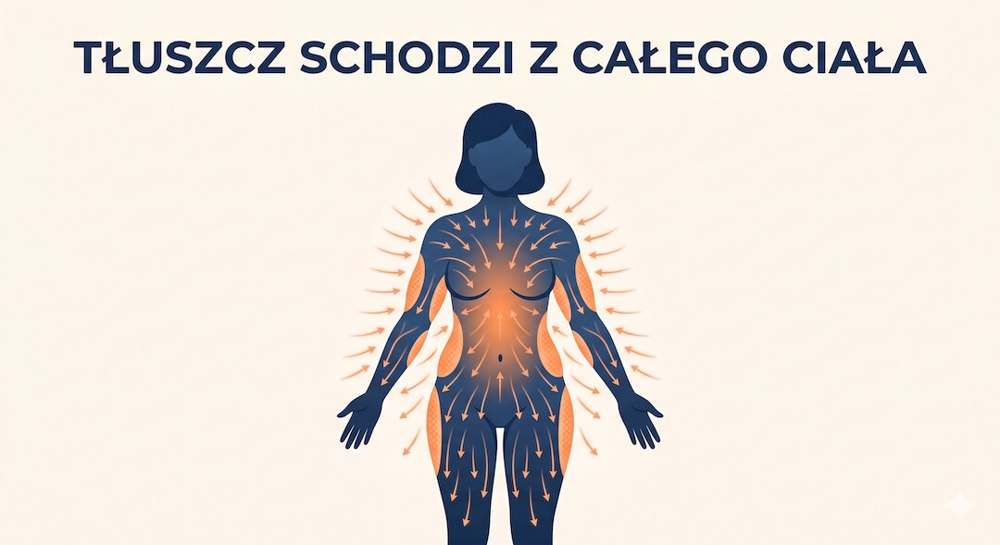
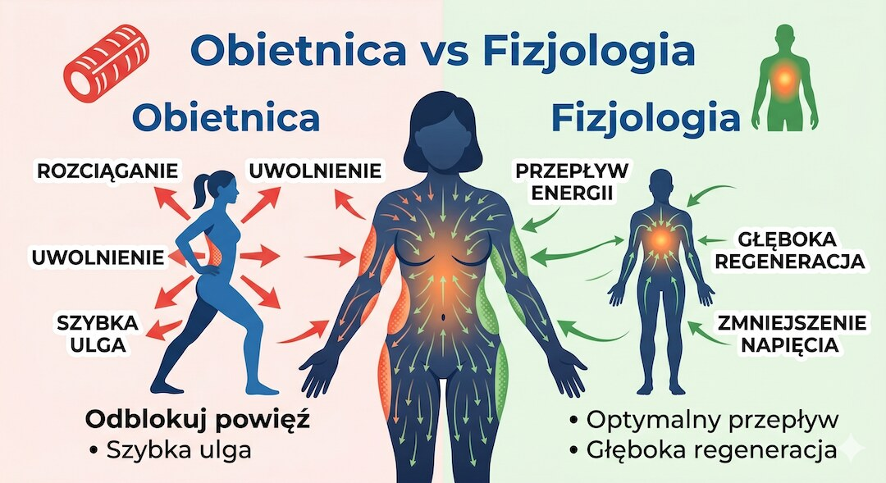
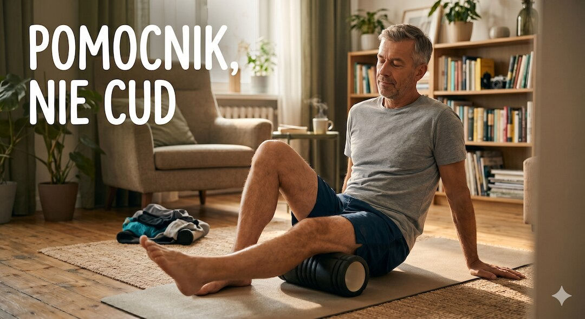

Reklamy w sieci obiecują, że wystarczy „odblokować powięź”, rozbić zrosty wałkiem albo wymasować brzuch, a tłuszcz sam zacznie schodzić. Brzmi to całkiem logicznie. Tylko fizjologia mówi co innego. Rozłóżmy to spokojnie.
Szybka odpowiedź
Choć reklamy obiecują szybkie odchudzanie za pomocą rolowania, oponka brzuszna nie powstaje przez zablokowaną powięź, a jej mechaniczne odblokowanie nie spala tłuszczu, ponieważ redukcja tkanki tłuszczowej zachodzi systemowo w całym organizmie wyłącznie pod warunkiem ujemnego bilansu kalorycznego, podczas gdy terapia manualna powięzi wpływa korzystnie na ruchomość stawów i ból, ale nie działa bezpośrednio na spalanie energii.
Kluczowe wnioski
- Tłuszcz spala się systemowo, z całego ciała naraz, a nie z miejsca, które masujesz albo ćwiczysz.
- Meta-analizy nad „spot reduction” nie znalazły dowodów, że trening jednego miejsca usuwa stamtąd tłuszcz.
- Praca na powięzi (rolowanie, terapia manualna) realnie pomaga na ból i zakres ruchu, ale nie spala kalorii jak cardio.
- Oponka po 50-tce to głównie hormony, mniej mięśni i mniejsza aktywność, a nie zatkana folia.
Dlaczego ta obietnica brzmi tak wiarygodnie?
Bo ma w sobie ziarno prawdy, a to najlepszy klej dla mitu. Powięź faktycznie istnieje, faktycznie potrafi być sztywna i faktycznie wpływa na to, jak się ruszasz. Reklama bierze ten prawdziwy fragment i dokleja do niego fałszywą obietnicę: że odblokowanie folii spuści tłuszcz z brzucha.
Do tego dochodzi efekt natychmiastowy. Po wymasowaniu brzucha czujesz się luźniej, brzuch wygląda płaściej przez chwilę, bo zeszła część wody i napięcia. Mózg łączy kropki: „działa”. Tyle że to nie jest spalony tłuszcz, tylko chwilowa zmiana napięcia i obrzęku. Nie jesteś naiwny, że to przyciąga uwagę. Po prostu reklama gra na realnym odczuciu.
Co to w ogóle jest powięź i jak działa?
Powięź to sieć tkanki łącznej, która owija mięśnie, nerwy i narządy w jeden ciągły system. Zbudowana jest głównie z kolagenu i elastyny, zanurzonych w uwodnionej substancji. Kiedy robi się sztywna, kleista albo „zgęstniała”, może znacząco ograniczać ruch i wywoływać ból.
I tu ważne: warstwa powięzi tuż pod skórą rzeczywiście zawiera trochę tkanki tłuszczowej. Stąd skojarzenie. Ale „zawiera trochę tłuszczu” to nie to samo co „decyduje, ile tłuszczu masz na brzuchu”. Folia wokół paczki nie decyduje, ile w paczce jest masła. Decyduje to, co i ile do tej paczki wkładasz oraz ile z niej wyjmujesz.
Co naprawdę mówi fizjologia spalania tłuszczu?
Tłuszcz to magazyn energii rozłożony po całym ciele. Kiedy w ciągu dnia wydatkujesz więcej energii, niż dostarczasz z jedzeniem, organizm sięga po te zapasy. Kluczowe: sięga po nie systemowo, z różnych miejsc naraz, a o kolejności decydują geny, hormony i płeć, a nie to, którą okolicę masujesz czy ćwiczysz. Zobacz nasz pełny artykuł o tym, jak pozbyć się oponki brzusznej .
Dlatego masaż powięzi czy rolowanie nie „wyciska” tłuszczu z brzucha. To nie jest zawór ani gąbka. Praca na powięzi zmienia napięcie, czucie i ruchomość tkanki, działa głównie przez układ nerwowy, a nie przez fizyczne wypompowanie tłuszczu. Spalanie energii w tym czasie jest minimalne, nieporównywalne z marszem czy treningiem siłowym.

Co mówią twarde dowody?
Najmocniejszy argument to badania nad tak zwanym „spot reduction”, czyli miejscowym spalaniem tłuszczu. Przegląd systematyczny z meta-analizą sprawdzał, czy trenowanie jednej kończyny zmniejsza tłuszcz akurat w tym miejscu bardziej niż gdzie indziej. Nie znaleziono takiego efektu. Tłuszcz schodził z całego ciała, niezależnie od tego, co ćwiczono lokalnie.
Druga sprawa to sama praca na powięzi. Przeglądy badań pokazują, że terapia mięśniowo-powięziowa potrafi realnie zmniejszać ból i zwiększać zakres ruchu. To jest udokumentowane i wartościowe. Ale w tych badaniach mówi się o bólu, ruchomości i czuciu, a nie o spalaniu tłuszczu brzusznego. Nawet kliniki manualne piszą wprost: to nie jest metoda na redukcję tłuszczu i nie spala kalorii jak cardio.

Gdzie jest granica prawdy?
Nie wrzucam całej powięzi do kosza. Sztywna, bolesna tkanka potrafi realnie utrudniać życie: gorzej się ruszasz, mniej chętnie chodzisz na siłownię, omijasz ruch. A mniej ruchu to z czasem więcej tłuszczu. Warto wdrożyć codzienne mobilność i rozciąganie dla zachowania sprawności stawów.
To jest uczciwa granica. Rolowanie, terapia manualna, mobilność, rozgrzewka, masaż, to dobre narzędzia na ból i ruchomość. Po prostu nie sprzedawajmy ich jako maszynki do topienia oponki, bo tym nie są. Pomocnik treningu, a nie zamiennik.

Co naprawdę działa na oponkę po 50-tce?
Tu nie ma magii, jest fizjologia. Po 50-tce masa mięśniowa spada o 5-10% na dekadę, a zmiany hormonalne przesuwają tłuszcz w okolice brzucha. Mniej mięśni to wolniejszy metabolizm i większy magazyn na środku. To nie jest brak silnej woli, to biologia, z którą trzeba zagrać mądrze.
Zamiast szukać cudownych metod rolowania, warto oprzeć plan na trzech filarach. Kluczem jest zadbanie o odpowiednią ilość białka w diecie, wdrożenie regularnego treningu oraz kontrola stresu.
Co realnie zmienia obraz, potwierdzone badaniami:
| Dźwiganie (trening siłowy) | 2 do 3 razy w tygodniu, progresja ciężaru. W badaniach RCT zmniejszał tłuszcz trzewny i odbudowywał mięśnie. |
| Więcej białka | Wyższe spożycie wiąże się z mniejszą ilością tłuszczu brzusznego i chroni mięśnie podczas redukcji. |
| Cardio i więcej kroków | Najlepiej obniża samą masę tłuszczu i pomaga utrzymać deficyt energetyczny. |
| Sen i mniej stresu | Przewlekły stres podnosi kortyzol, który sprzyja odkładaniu tłuszczu na brzuchu. |
| Mniej cukru dodanego | Napędza stan zapalny i magazynowanie tłuszczu trzewnego. |
Nudne? Bardzo. Ale to jest to, co naprawdę przesuwa wskazówkę, a nie kolejne odblokowywanie powięzi.
Kiedy oponka to sygnał, żeby pójść do lekarza?
Sam obwód brzucha to jeszcze nie diagnoza, ale jest kilka sytuacji, w których nie powinno się zgadywać w domu. Jeśli brzuch rośnie szybko bez zmiany diety i aktywności fizycznej, jest twardy, napięty lub boli, to nie jest temat na wałek, tylko na pilną wizytę lekarską.
Warto też sprawdzić zdrowie metaboliczne, bo tłuszcz trzewny jest aktywny zapalnie i wiąże się z insulinoopornością oraz ryzykiem sercowo-naczyniowym. Obwód w pasie, lipidogram, glukoza, ciśnienie, to konkrety, które powiedzą więcej niż wygląd. Jeśli masz wątpliwości albo objawy, odpuść internetowe teorie o powięzi i pogadaj z lekarzem.
Zobacz też: ai w medycynie czy naprawde pomaga pacjentom fakty badania, apob apoa badania cholesterol.
Najczęściej zadawane pytania
Czy zablokowana powięź powoduje oponkę brzuszną?
Nie ma żadnych dowodów naukowych na taki mechanizm w organizmie. Oponka brzuszna to przede wszystkim efekt bilansu energetycznego, zmian hormonalnych po 50. roku życia oraz spadku masy mięśniowej. Powięź realnie wpływa na ruch i zakresy stawów, ale nie trzyma tłuszczu na brzuchu.
Czy masaż albo rolowanie powięzi spala tłuszcz z brzucha?
Nie. Rolowanie i masaż powięzi pomagają zmniejszyć ból i poprawiają ruchomość, ale spalają znikome ilości energii. Tkanka tłuszczowa znika systemowo z całego ciała w deficycie kalorycznym, a mechaniczne uciskane brzucha nie przyspiesza jej spalania w tym konkretnym miejscu.
Czy można spalić tłuszcz tylko z brzucha?
Nie ma fizjologicznej możliwości miejscowego spalania tłuszczu, co potwierdzają liczne badania naukowe. Wykonywanie brzuszków czy masaży nie usunie tłuszczu wyłącznie z talii. O kolejności i tempie chudnięcia decydują przede wszystkim geny oraz stan hormonalny organizmu.
Co naprawdę zmniejsza oponkę po 50-tce?
Najbardziej skuteczne działania to regularny trening siłowy dwa lub trzy razy w tygodniu, zwiększone spożycie białka, codzienna aktywność fizyczna, dbanie o głęboki sen oraz ograniczenie cukrów prostych. To poparte badaniami nawyki, które odbudowują metabolizm.
Czy praca na powięzi jest bezużyteczna?
Nie, rolowanie oraz terapia manualna są bardzo pomocne w regeneracji. Pomagają zmniejszyć sztywność, redukują ból i poprawiają zakresy ruchu, co ułatwia regularne treningi. Są świetnym uzupełnieniem aktywnego stylu życia, ale nie samodzielną metodą odchudzania.
Źródła
- A proposed model to test the hypothesis of exercise-induced localized fat reduction (spot reduction), incl. systematic review with meta-analysis (Human Movement, 2021)
- Myofascial release and fascial-targeted mechanical interventions in rehabilitation (Frontiers in Physiology, 2026)
- Effectiveness of myofascial release: Systematic review of randomized controlled trials (J Bodyw Mov Ther, 2015)
- Resistance training decreased abdominal adiposity in postmenopausal women (RCT, Maturitas/ScienceDirect, 2023)
- The effects of exercise training on body composition in postmenopausal women: systematic review and meta-analysis (PMC, 2023)
- Effect of Resistance Exercise on the Lipolysis Pathway in Obese Pre- and Postmenopausal Women (PMC, 2021)
- Changes in abdominal subcutaneous adipose tissue phenotype following menopause is associated with increased visceral fat mass (PMC, 2021)
- Menopause belly: causes and what helps (Breastcancer.org, reviewed by MD, 2026)
Uwaga: Artykuł ma charakter informacyjny i edukacyjny. Nie zastępuje konsultacji lekarskiej, diagnozy ani leczenia.